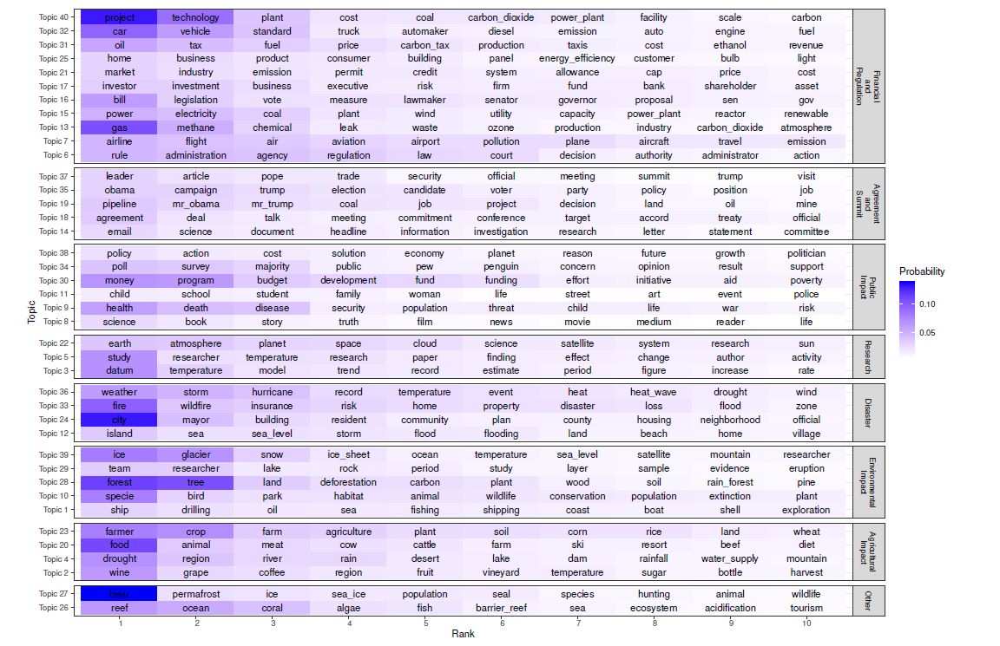

Many consider climate change as one of the biggest challenges of our times. However, there is disagreement on the magnitude of the climate change problem and how to solve it. Conditional on their view on the issue, some people may have a high preference for sustainable solutions and investments tackling the climate change problem, while others may not. Moreover, these preferences can evolve on the arrival of new information. In general, preference for sustainable solutions is largely a function of how concerned people are about climate change.
Discerning concerns about climate change in almost real-time can be useful for many applications, particularly asset pricing. The theoretical model proposed by Pastor et al. (2020) implies that the returns of green stocks vs. the returns of brown stocks are a function of the unexpected changes in climate change concerns. In particular, when there is an unexpected increase in climate change concerns, green stocks outperform brown stocks.
However, an issue is that the level of concern about climate change cannot be observed and needs to be proxied. This fact renders the analysis of the dynamics of climate change concerns more complicated than the analysis of observable macroeconomic variables such as GDP growth. Here, we propose an index derived from major U.S newspapers to proxy for change in climate change concerns. Our corpus, or set of news articles, about climate change to derive this index can be summarized in multiple topics and themes, for which the most representative words are shown below:

To build our indices, we first propose a concern score: A combination of the level of risk and the sentiment expressed in news media articles. We then compute the concerns score for all news articles about climate change in the corpus. Finally, we aggregate those concerns score into a daily index. We explicitly consider the news media’s attention to climate change during the news articles’ concerns score aggregation process. Indeed, there is a higher probability of the true change in climate change concerns when there is both concerning news articles and a high media attention level.
Check out the paper on this index!
Download the data here